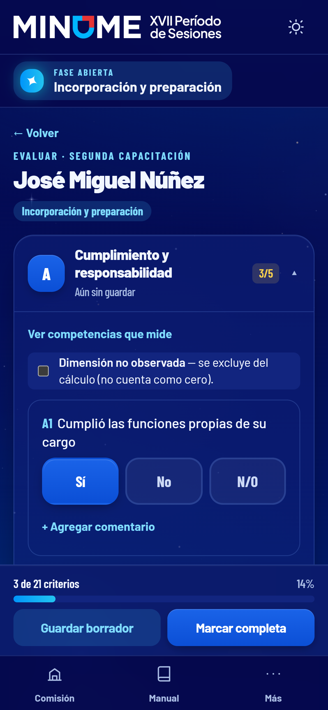

2026


Sistema de
Evaluación y Control
El desempeño de los voluntarios, en un solo lugar
Evaluar con criterio.
Decidir con datos.
Reconocer a quien brilla.
Acceso seguro
Una cuenta para cada persona
Contraseña personal
Permisos por rol
Bloqueo por fase
Equipo de EyC · desde el teléfono
Evalúa en plena sesión
Rúbrica por dimensiones A–F con Sí, No y N/O
N/O se excluye y los pesos se renormalizan
Comentario obligatorio cuando la regla lo pide

Subsecretaría · Secretaría General
Semáforo del desempeño, al instante
Verde ≥ 80
Amarillo ≥ 60
Rojo < 60
Tema claro y oscuro
Puntaje final
Tres cortes, un resultado
Corte 1 · Preparación25 %
Corte 2 · Seguimiento25 %
Evaluación final50 %
0
/ 100
calculado en la base, sin hojas de cálculo
calculado en la base, sin hojas de cálculo
Comisiones · decisiones · rotaciones · auditoría
Todo el proceso, con manual por rol
eyc-minume-xvii.vercel.app
Una iniciativa del
Ministerio de Educación de la República Dominicana · PLERD